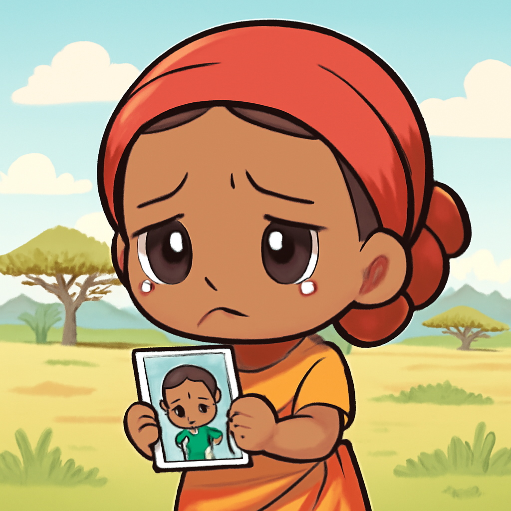

其一 · 伊朗德黑蘭 · 停火協議即將達成
伊朗與美國接近達成停火協議。
在伊朗德黑蘭，伊朗與美國和調解國巴基斯坦正在努力最終確定一項停火協議。這項協議的達成將使霍爾木茲海的衝突得以結束，對區域安全影響深遠。這樣的好消息或許能讓那些長期關注中東局勢的人們稍微鬆一口氣。
🔗 原始新聞 ↗
2026-06-13 · 以古觀今，以笑抗愁
伊朗與美國接近達成停火協議。
在伊朗德黑蘭，伊朗與美國和調解國巴基斯坦正在努力最終確定一項停火協議。這項協議的達成將使霍爾木茲海的衝突得以結束，對區域安全影響深遠。這樣的好消息或許能讓那些長期關注中東局勢的人們稍微鬆一口氣。
🔗 原始新聞 ↗
馬斯克因SpaceX上市成為首位兆萬富翁。
在美國洛杉磯，馬斯克的財富因SpaceX在納斯達克上市而暴增，如今達到了1.11兆美元，成為全球首位兆萬富翁。這讓人不禁想，馬斯克是不是該考慮開一間“馬斯克銀行”來管理這些錢？
🔗 原始新聞 ↗
法國一名11歲女孩被謀殺，警方遭質疑。
在法國，一名11歲女孩Lyhanna被謀殺，主要嫌疑犯早在九個月前就被報告給警方，但卻未受到詢問。這一事件引發了對警方處理案件的質疑與愤怒，讓人感慨有時候，預防勝於事後追悔。
🔗 原始新聞 ↗
西班牙前總理因珠寶未報關面臨調查。
在西班牙，前總理哈維爾·薩帕特羅因為未能證明他支付了120萬歐元的珠寶進口稅而再次成為焦點。這桩案件讓人懷疑政治人物的透明度，也令人想起那些令人嘖嘖稱奇的富豪生活。
🔗 原始新聞 ↗
肯尼亞失踪男孩的遺體在抗議後被發現。

在肯尼亞，失踪的男孩西爾維斯特·穆伊蓋·恩杜恩古的遺體在他母親的搜尋後被找到，此事引發的抗議活動把目光聚焦在當地的埃博拉隔離中心。這不禁讓人心疼，母親的尋找成了悲劇的結局，也提醒我們珍惜每一個生命。
🔗 原始新聞 ↗